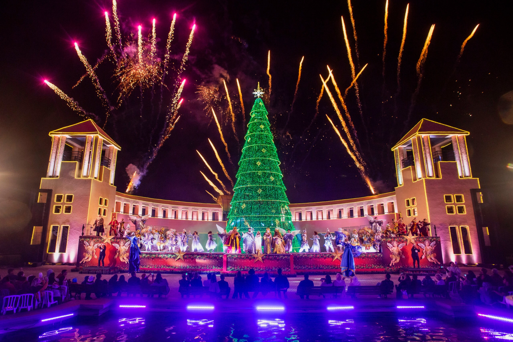

.png)
Natal de Curitiba - Luz dos PinhaisNeste final de ano, Curitiba se transforma em um verdadeiro conto de fadas com o Natal de Curitiba - Luz dos Pinhais! Venha vivenciar a magia do Natal em uma das celebrações mais encantadoras do Brasil, que ilumina a cidade com uma profusão de luzes, cores e emoções. Durante todo o período natalino, os principais pontos turísticos de Curitiba ganham vida com decorações deslumbrantes e espetáculos inesquecíveis. Desde o tradicional acendimento das luzes até desfiles emocionantes e apresentações musicais, cada evento traz um toque especial para a celebração. A atmosfera festiva é perfeita para reunir familiares e amigos em um ambiente acolhedor e alegre. Desfrute de atrações para todas as idades, como corais que entoam canções natalinas, apresentações de dança e teatro, além de um mercado de Natal repleto de produtos artesanais e delícias típicas da época. Não deixe de experimentar as iguarias regionais e a famosa gastronomia curitibana em meio a tanta alegria! Traga sua família, vista-se com seu melhor sorriso e venha fazer parte desta festa mágica. O Natal de Curitiba - Luz dos Pinhais é uma experiência que vai aquecer seu coração e criar memórias inesquecíveis. Venha celebrar a esperança, a amizade e o amor neste Natal em Curitiba! |
 |
|---|
Festival de Teatro de CuritibaPrepare-se para uma explosão de criatividade e emoção no Festival de Teatro de Curitiba, um dos maiores e mais respeitados eventos culturais do Brasil! Realizado anualmente, este festival reúne artistas, grupos de teatro e amantes da arte em um verdadeiro celebração da dramaturgia e da performance. Com uma programação diversificada que abrange desde peças clássicas até produções contemporâneas, o festival oferece uma rica variedade de espetáculos que atendem a todos os gostos. Venha se surpreender com performances impactantes, histórias que emocionam e experiências teatrais que desafiam a imaginação! Além das apresentações, o festival também promove oficinas, debates e atividades educativas, proporcionando uma oportunidade única para aprender e se conectar com a arte de uma forma mais profunda. É um espaço onde novos talentos podem brilhar e onde o público pode descobrir a riqueza do teatro nacional. Se você é um apaixonado por artes cênicas ou está apenas começando a explorar esse universo, o Festival de Teatro de Curitiba é o lugar perfeito para mergulhar em histórias inesquecíveis e conhecer a vibrante cena teatral do Brasil. Venha se emocionar, rir e refletir com o que há de melhor no teatro e fazer parte dessa grande festa da cultura. Junte-se a nós e celebre a magia do palco! |
|---|
Feira do Largo da OrdemDescubra a essência de Curitiba na Feira do Largo da Ordem, um dos eventos mais tradicionais e vibrantes da cidade! Realizada todos os domingos, essa feira é um verdadeiro ponto de encontro para locais e visitantes, oferecendo uma experiência única que combina cultura, artesanato, gastronomia e música. Passeie pelos coloridos estandes repletos de produtos artesanais feitos por talentosos artistas e artesãos locais. Desde roupas, acessórios e objetos de decoração até obras de arte exclusivas, cada peça conta uma história e reflete a criatividade da cultura curitibana. É o lugar perfeito para encontrar souvenirs especiais e apoiar o trabalho de empreendedores da região. A gastronomia também brilha na Feira do Largo da Ordem! Delicie-se com uma variedade de pratos típicos, como o famoso pão com bolinho, quitutes de comida de rua, e sobremesas irresistíveis que vão aguçar seu paladar. Aproveite para saborear um café fresco ou uma bebida típica enquanto aprecia a atmosfera animada ao seu redor. |
|---|